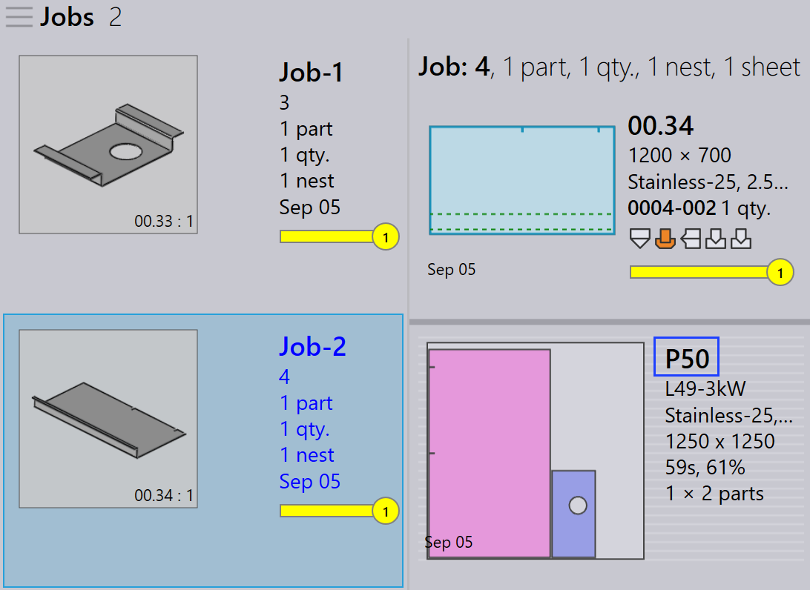

재포장
TruSmartCAM에는 별도의 재포장 모듈이 없습니다. 대신 재포장은 부품을 결합하는 방법에 유연성을 제공하는 작업 수준 옵션을 통해 처리됩니다.
재포장을 수행할 수 있는 세 가지 방법이 있습니다.
-
*여러 통합 작업에서 파트들 혼합*로 재포장.
-
파트들 추가… 대화형 마법사를 사용한 수동 재포장.
-
TecZone를 사용한 수동 재포장.
여러 통합 작업에서 파트들 혼합로 재포장
-
이 옵션을 활성화하려면 공장 → 설정 → 통합 작업 → 네스팅 설정 → *여러 통합 작업에서 파트들 혼합*로 이동합니다.

-
이 옵션을 활성화하면 자동 네스팅 또는 대화형 네스팅 중에 다른 작업의 부품을 함께 그룹화할 수 있어 결합된 포장 또는 네스팅이 가능합니다.
-
예를 들어:
-
Job-1에는 1개 부품이 있고 Job-2에는 1개 부품이 있습니다.
-
*여러 통합 작업에서 파트들 혼합*가 활성화되면 TruSmartCAM는 이 2개 부품을 단일 최적화된 네스트로 재포장할 수 있습니다.
-

-
이 옵션이 없으면 각 작업의 부품은 다른 레이아웃 이름으로 네스팅/포장 중에 분리된 상태로 유지됩니다.
-
이 옵션을 활성화하지 않고도 재포장을 수동으로 수행할 수 있습니다.
add parts 대화형 마법사를 사용한 수동 재포장
-
레이아웃 보기에서 재포장할 부품을 선택합니다.
-
부품을 마우스 오른쪽 버튼으로 클릭하고 레이아웃 패널에서 *파트들 추가…*를 선택합니다.

-
마법사의 프롬프트에 따라 재포장 프로세스를 완료합니다.
-
*다른 통합 작업 파트들 표시*를 선택하고 현재 작업에 추가합니다.

-
변경 사항을 검토하고 재포장을 확인합니다.

자세한 내용은 Add Parts를 참조하십시오.
TecZone를 사용한 수동 재포장
-
 를 클릭하여 TecZone를 엽니다.
를 클릭하여 TecZone를 엽니다.

-
TecZone 인터페이스에서 Add를 클릭합니다.

-
재포장할 부품을 선택할 수 있는 새 창이 나타납니다. *표시…*를 클릭한 다음 *다른 통합 작업 파트들*를 선택합니다. 선택을 완료한 후 *_Pick*를 클릭합니다.

-
부품을 재포장해야 하는 위치를 정의할 수 있는 새 창이 나타납니다.

-
*변경 내용을 Praxis에 저장*를 클릭하면 재포장된 레이아웃을 TruSmartCAM에서 사용할 수 있습니다.